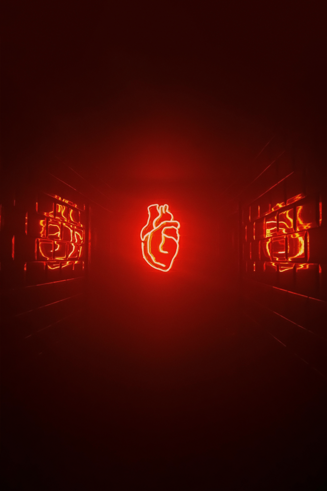

Inovação em Foco

Educação e Saúde
A tecnologia serve como uma ponte, conectando o conhecimento académico a soluções práticas que melhoram a saúde e o bem-estar da comunidade.

O Poder do "Fazer"
Capacitar jovens com as ferramentas para construir, programar e inovar é o motor para o desenvolvimento de soluções locais e sustentáveis.

Um Futuro Colaborativo
O futuro é construído quando unimos a curiosidade da juventude, o apoio da academia e a necessidade da comunidade para inovar com propósito.